| No. |
Question |
Answer-Query |
output |
| 01 |
Select unique job from emp table |
SELECT Job FROM emp |
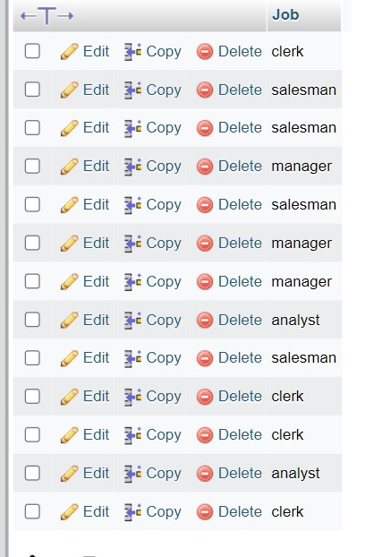 |
| 02 |
List the details of the emps in asc order of the Dptnos and desc of Jobs?
|
select * from emp order by deptno asc,job desc; |
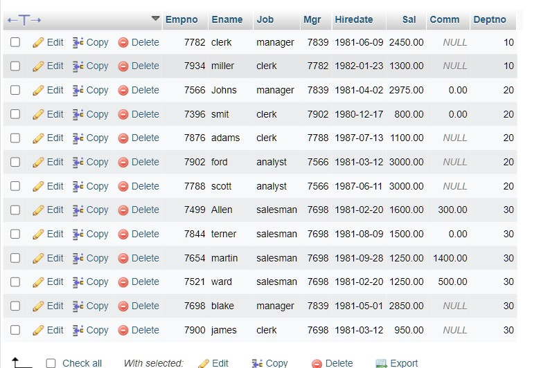 |
| 03 |
Display all the unique job groups in the descending order?
|
SELECT DISTINCT Job FROM emp ORDER BY Job DESC; |
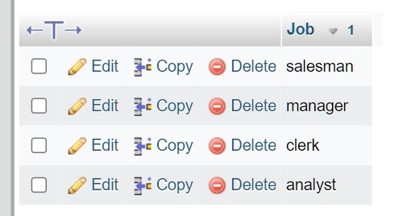 |
| 04 |
List the emps who joined before 1981.
|
SELECT * FROM emp WHERE Hiredate<('1981-01-01');
|
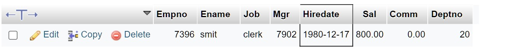 |
| 05 |
List the Empno, Ename, Sal, Daily sal of all emps in the asc order of Annsal.
|
SELECT Empno,
ename,
sal Monthly_sal,
sal/30 Daily_Sal,
12*sal Anual_Sal
FROM emp
ORDER BY Anual_Sal ASC; |
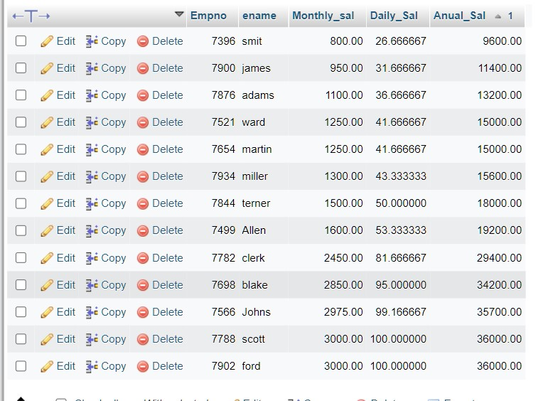 |
| 06 |
List the Empno, Ename, Sal, Exp of all emps working for Mgr 7369.
|
select empno,ename,sal,exp from emp where mgr = 7369; |
|
| 07 |
Display all the details of the emps whose Comm. Is more than their Sal.
|
SELECT * FROM emp WHERE Comm>(Sal); |
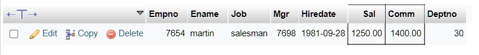 |
| 08 |
List the emps who are either ‘CLERK’ or ‘ANALYST’ in the Desc order.
|
SELECT *
FROM emp
WHERE Job='CLERK'
OR Job='ANALYST'
ORDER BY job DESC; |
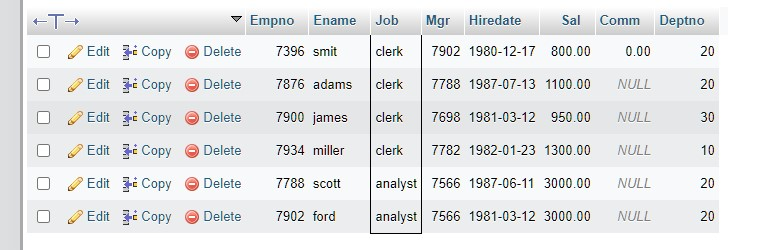 |
| 09 |
List the emps Who Annual sal ranging from 22000 and 45000.
|
SELECT *
FROM emp
WHERE 12*sal BETWEEN 22000 AND 45000; |
 |
| 10 |
List the Enames those are starting with ‘S’ and with five characters.
|
SELECT Ename FROM emp WHERE length(Ename)=5 and Ename like 'S%n'; |
|
| 011 |
List the emps whose Empno not starting with digit78.
|
SELECT * FROM emp WHERE Empno NOT LIKE '78%'; |
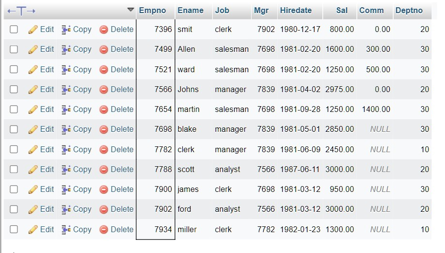 |
| 012 |
List all the Clerks of Deptno 20.
|
SELECT Empno
FROM emp
WHERE job = 'CLERK' AND deptno = 20; |
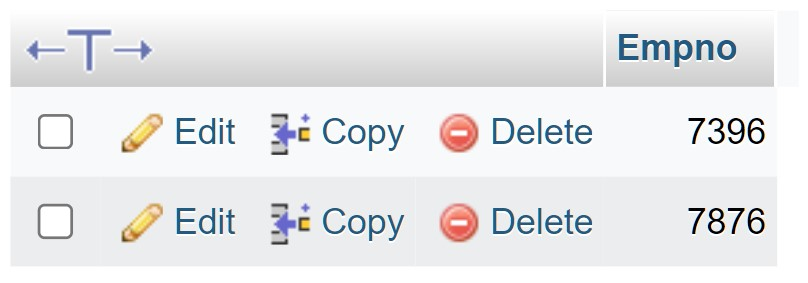 |
| 013 |
List the Emps who are senior to their own MGRS.
1 |
select * from emp A where hiredate <
(select hiredate from emp B where b.Empno = A.Mgr) |
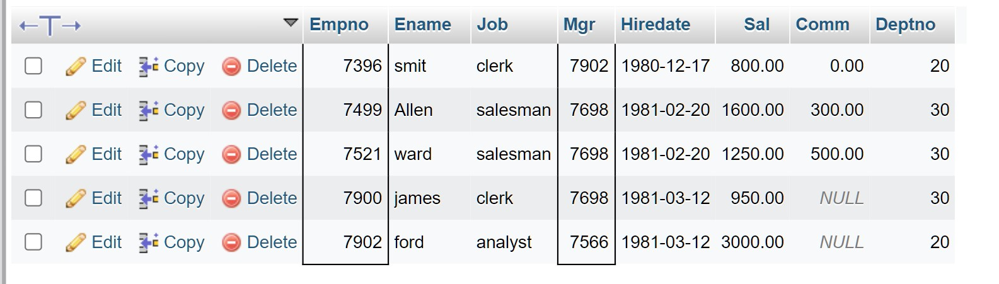 |
| 014 |
. List the Emps of Deptno 20 whose Jobs are same as Deptno10.
|
select * from emp where Deptno=20 and job in ( select distinct job from emp where Deptno=10);
|
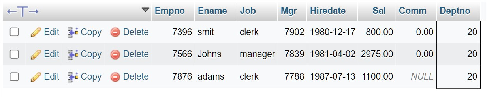 |
| 015 |
List the Emps whose Sal is same as FORD or SMITH in desc order of Sal.
|
Select * from emp where sal in (select sal from emp where ( Ename = 'SMITH' or Ename = 'FORD' )) order by Sal desc; |
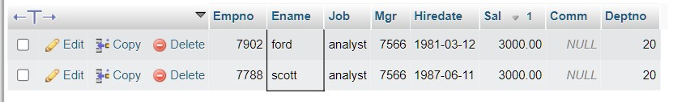 |
| 016 |
List the emps whose jobs same as SMITH or ALLEN.
|
Select * from emp where job in(select distinct job from emp where Ename in('ALLEN','SMITH')) and Ename not in ('ALLEN','SMITH') |
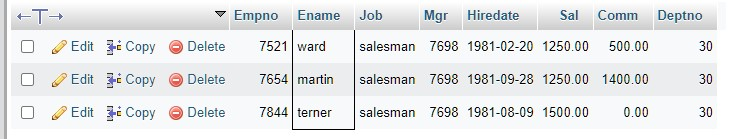 |
| 017 |
Any jobs of deptno 10 those that are not found in deptno 20.
|
|
|
| 018 |
Find the highest sal of EMP table.
|
Select Max(sal) from emp; |
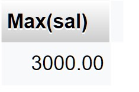 |
| 019 |
Find details of highest paid employee.
|
Select * from emp where sal = (select Max(sal) from emp);
| 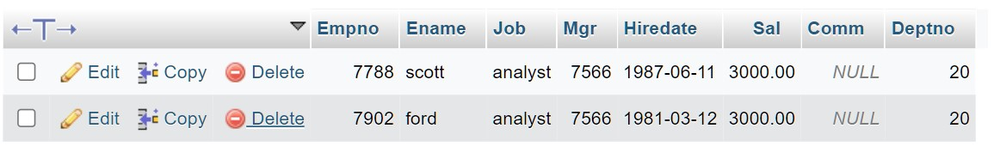 |
| 020 |
. Find the total sal given to the MGR.
|
SELECT SUM(sal) AS total_salary_given_to_mgr FROM emp; |
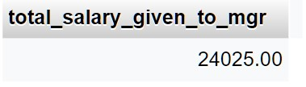 |
| 021 |
List the emps whose names contains ‘A’.
|
SELECT Ename
FROM emp
WHERE Ename LIKE '%A%'; |
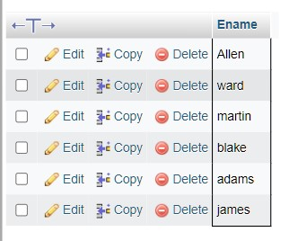 |
| 022 |
Find all the emps who earn the minimum Salary for each job wise in ascending order.
|
SELECT *
FROM emp
WHERE sal IN
(SELECT min(sal)
FROM emp
GROUP BY job)
ORDER BY sal ASC; |
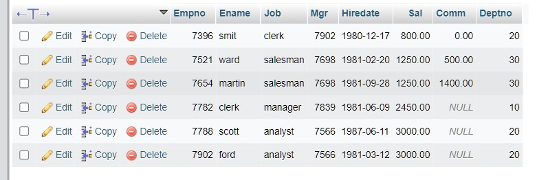 |
| 023 |
List the emps whose sal greater than blakes sal.
|
SELECT *
FROM emp
WHERE sal>
(SELECT sal
FROM emp
WHERE Ename ='blake'); |
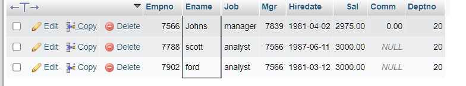 |
| 024 |
Create a procedure with dno as input parameter to fetch ename and dname.
| |
|
| 025 |
Add column Pin with bigint datatype in table student.
|
ALTER TABLE student ADD Pin bigint AFTER State;
|
 |
| 026 |
Modify the student table to change the sname length from 14 to 40.
|
ALTER TABLE student CHANGE Sname Sname VARCHAR(40) NOT null; |
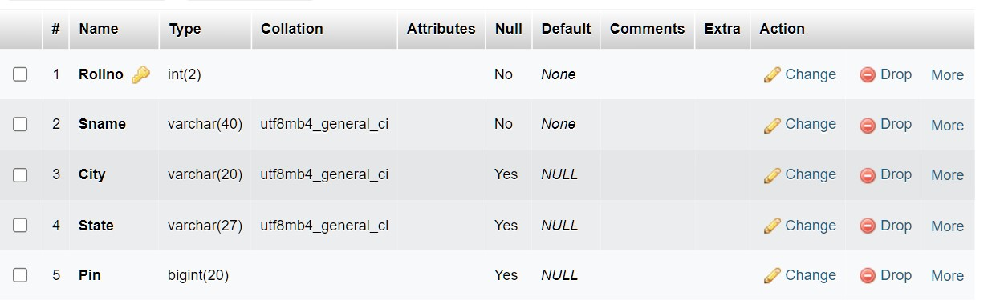 |